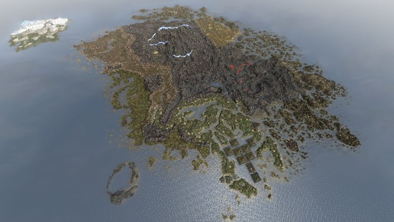

Vvardenfell is a large island located inside the bay-like Inner Sea, and
is surrounded by mainland Morrowind with the exception of its northern coast,
which meets the Sea of Ghosts. The island is dominated by the great volcano, Red Mountain.
The island itself is named after the original Dwemeri name of Red Mountain, literally translating to
"City of the Strong Shield". It is characterized by arid wastes, rocky highlands and coastal wetlands
filled with unusual and unique flora and fauna.
Vvardenfell is the main setting of Morrowind and encompasses the majority of the game world.
The Bloodmoon expansion adds the island of Solstheim to the northwest of Vvardenfell,
while the Siege at Firemoth plugin adds the island chain of Firemoth just off the southwestern coast.
The Tribunal expansion takes place in the unconnected mainland city of Mournhold.